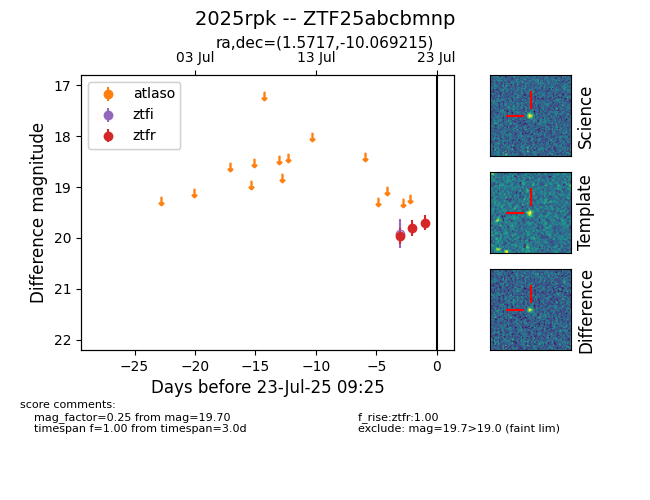

Target ZTF25abcbmnp at 2025-07-23 11:48, see:
FINK: fink-portal.org/ZTF25abcbmnp
Lasair: lasair-ztf.lsst.ac.uk/objects/ZTF25abcbmnp
ALeRCE: alerce.online/object/ZTF25abcbmnp
TNS: wis-tns.org/object/2025rpk
YSE: ziggy.ucolick.org/yse/transient_detail/2025rpk
alt names
ZTF25abcbmnp (ztf,fink)
2025rpk (tns,yse)
coordinates:
equatorial (ra, dec) = (1.5717,-10.06922)
galactic (l, b) = (88.8342,-69.89308)
photometry
last ztfr=19.70
3 ztfr detections
